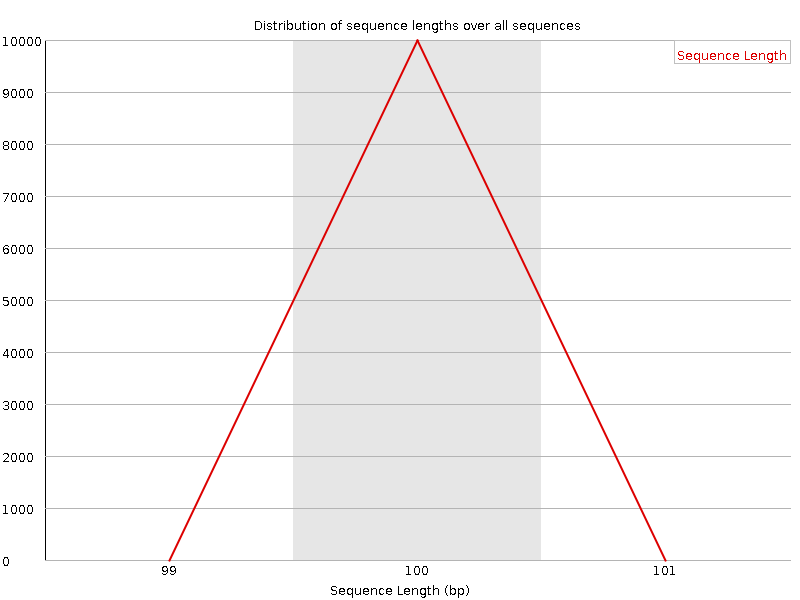

![[OK]](Icons/tick.png) Basic Statistics
Basic Statistics
| Measure | Value |
|---|---|
| Filename | SRR1002940.r1.temp.fq |
| File type | Conventional base calls |
| Encoding | Sanger / Illumina 1.9 |
| Total Sequences | 10000 |
| Filtered Sequences | 0 |
| Sequence length | 100 |
| %GC | 44 |
Per base sequence quality
Per sequence quality scores
![[WARN]](Icons/warning.png) Per base sequence content
Per base sequence content
Per base GC content
![[FAIL]](Icons/error.png) Per sequence GC content
Per sequence GC content
Per base N content
Sequence Length Distribution

Sequence Duplication Levels

Overrepresented sequences
| Sequence | Count | Percentage | Possible Source |
|---|---|---|---|
| TTAGGGGTTAGGGTTAGGGTTAGGGGTTAGGGTTAGGGTTAGGGGTTAGG | 20 | 0.2 | No Hit |
| TAGGGGTTAGGGTTAGGGTTAGGGGTTAGGGTTAGGGTTAGGGGTTAGGG | 18 | 0.18 | No Hit |
Kmer Content
| Sequence | Count | Obs/Exp Overall | Obs/Exp Max | Max Obs/Exp Position |
|---|---|---|---|---|
| AACCC | 3180 | 4.0602593 | 6.7347507 | 9 |
| CCCTA | 2815 | 3.801216 | 6.4750977 | 5 |
| GAGGC | 2570 | 3.6444411 | 4.9096465 | 50-54 |
| ACCCT | 2670 | 3.605416 | 4.534836 | 2 |
| CTGGG | 2390 | 3.5843732 | 5.0365453 | 2 |
| CCTGG | 2170 | 3.452835 | 6.103913 | 5 |
| TTTTT | 4515 | 3.268523 | 4.8598633 | 9 |
| CCCAG | 2030 | 3.2403758 | 6.1233845 | 8 |
| CCTAA | 3165 | 3.2221398 | 4.8817205 | 6 |
| CCTCC | 1770 | 3.1702309 | 5.5853496 | 95-96 |
| GCCTG | 1990 | 3.1664248 | 5.340924 | 4 |
| GGAGG | 2335 | 3.1209292 | 4.2346854 | 60-64 |
| AAAAA | 5690 | 3.113282 | 4.466931 | 1 |
| CCAGG | 2060 | 3.0993154 | 5.050086 | 7 |
| GCCTC | 1785 | 3.0133882 | 4.8594546 | 70-74 |
| CCCCT | 1675 | 3.0000775 | 6.0119853 | 6 |
| GGGAG | 2220 | 2.967222 | 5.7682195 | 4 |
| GGGCC | 1485 | 2.7931724 | 6.316678 | 2 |
| CTCCC | 1555 | 2.7851462 | 5.1531296 | 6 |
| GGCTG | 1755 | 2.6320398 | 5.034027 | 5 |
| GGGGG | 1575 | 2.6317844 | 6.4132643 | 95-96 |
| TAGGG | 2240 | 2.5327353 | 5.9729466 | 1 |
| CCCTG | 1415 | 2.3887641 | 5.6665287 | 7 |
| GGCCA | 1495 | 2.2492604 | 5.7715273 | 9 |
| ACCCC | 1315 | 2.2270288 | 6.4966917 | 5 |
| AGGGG | 1640 | 2.1920018 | 7.0535727 | 2 |
| GCCCC | 1005 | 2.1278396 | 5.076274 | 5 |
| TGGGC | 1370 | 2.0546408 | 5.04159 | 1 |
| GGGGT | 1300 | 1.8376294 | 5.42259 | 3 |
| GCTGT | 1345 | 1.7064061 | 5.475261 | 6 |
| CCTGA | 1325 | 1.6863948 | 5.492728 | 7 |
| GGGTC | 910 | 1.3647614 | 5.034027 | 4 |
| GGGTG | 925 | 1.307544 | 5.42259 | 6 |